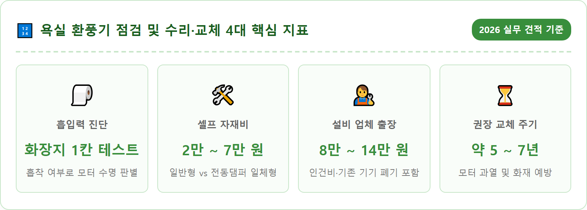
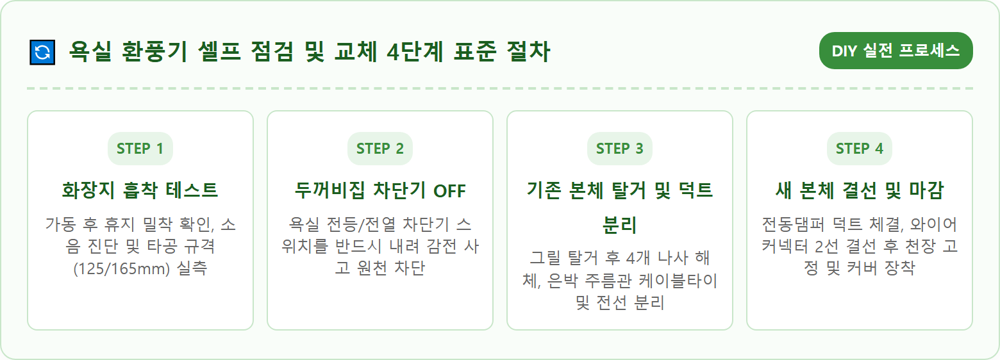
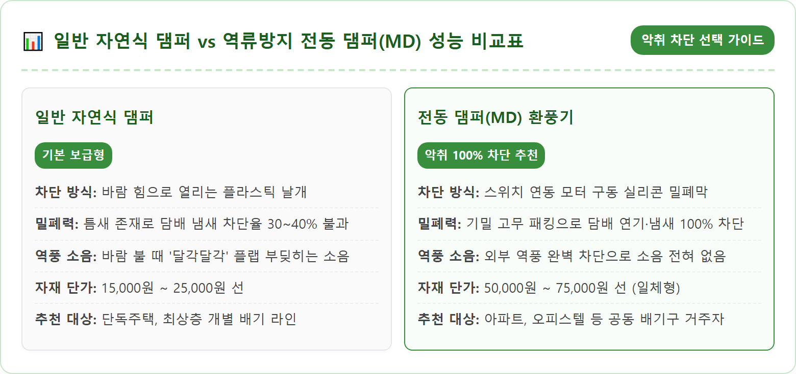
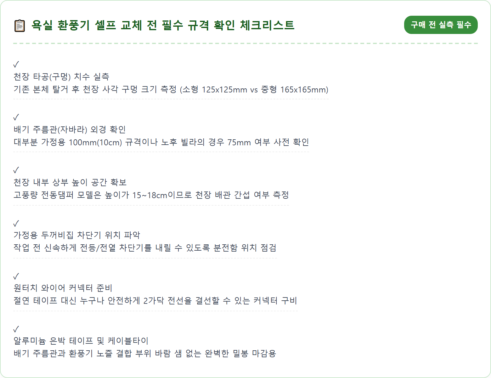
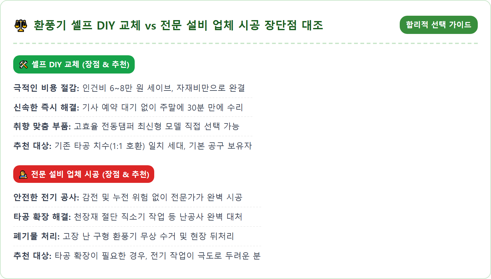
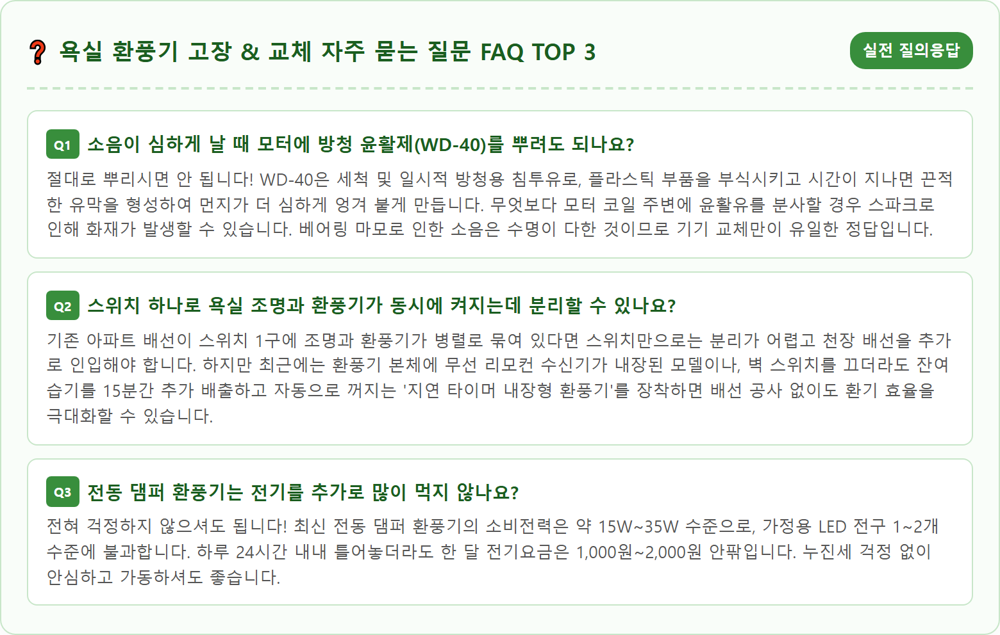

A realistic modern bathroom repair scene in Korea. A neat domestic bathroom with white tiled ceiling and warm lighting. A high-efficiency bathroom exhaust fan with an electric damper unit is partially mounted on the ceiling with its internal wiring and flexible aluminum duct neatly visible. A sheet of thin tissue paper is firmly suctioned against the exhaust fan grill, demonstrating strong ventilation airflow. On a clean nearby counter are clean tools like a screwdriver, wire connectors, and safety gloves. Photorealistic, 8k resolution, crisp indoor lighting, ultra-clear home improvement documentary style.

아파트나 빌라 등 공동주택에서 생활하다 보면 하루에도 몇 번씩 이용하는 욕실에서 어느 날부터인가 이상 징후가 감지되기 시작합니다. 욕실 환풍기 이상은 크게 세 가지 전형적인 증상으로 나타납니다. 첫 번째는 환풍기 스위치를 켰을 때 발생하는 **극심한 소음과 굉음**입니다. 평소 조용하던 모터에서 헬리콥터가 지나가는 듯한 '드르륵드르륵' 소리나 귀를 찌르는 '삐익~' 하는 고주파 마찰음이 발생한다면 내부 모터의 회전축 베어링이 심각하게 마모되었거나 먼지가 모터 축에 엉겨 붙어 회전 밸런스가 완전히 깨진 상태입니다.
두 번째는 샤워를 하고 난 뒤 한참이 지나도 거울의 김 서림이 사라지지 않고 욕실 벽면과 천장에 물방울이 맺히며 곰팡이가 피어오르는 **'흡입력 급감 현상'**입니다. 모터 자체는 회전하고 있지만 실제 공기를 빨아들여 외부로 배출하는 정압 풍량이 상실되어 껍데기만 돌아가는 상태입니다.
세 번째이자 가장 큰 스트레스를 유발하는 증상은 바로 **'이웃집 담배 냄새 및 음식 냄새의 역류'**입니다. 공동 배기 주름관(비트)을 함께 공유하는 아파트 구조상, 다른 집에서 피운 담배 연기나 청국장, 생선 굽는 냄새가 우리 집 환풍기 틈새를 타고 거꾸로 쏟아져 들어오는 현상입니다. 이러한 세 가지 증상은 단순한 불편을 넘어 욕실 내 곰팡이 번식과 실내 공기질 악화, 심지어 모터 과열로 인한 화재 위험까지 초래할 수 있으므로 신속한 점검과 조치가 필요합니다.
우리 집 욕실 환풍기가 현재 정상적으로 공기를 빨아들이고 있는지, 아니면 수명이 다해 무늬만 돌아가고 있는지 가장 쉽고 정확하게 판별할 수 있는 방법이 바로 전문가들이 사용하는 **'화장지 흡착 테스트'**입니다. 특별한 계측 장비 없이 롤 화장지 단 한두 칸만 있으면 10초 만에 자가 진단을 완료할 수 있습니다.
방법은 매우 간단합니다. 욕실 문을 살짝 닫은 상태에서 환풍기 스위치를 켭니다. 얇은 화장지 1~2칸을 뜯어 환풍기 흡입구 그릴 정중앙 표면에 가볍게 가져다 대어봅니다.
- 정상 상태 (흡입력 양호): 손을 떼어도 화장지가 환풍기 그릴 표면에 '착' 하고 강력하게 달라붙어 떨어지지 않고 붙어 있습니다.
- 위험 상태 (흡입력 저하): 화장지가 붙지 않고 힘없이 펄럭거리며 바닥으로 툭 떨어지거나, 손으로 눌러주어야 간신히 매달려 있는 상태입니다.
만약 화장지가 바닥으로 떨어진다면 모터 회전력이 급감했거나, 환풍기 날개(팬)에 찌든 먼지가 두껍게 고착되어 바람을 밀어내지 못하거나, 천장 속 배기 주름관(자바라 덕트)이 꺾이거나 찢어져 배기가 막힌 상태입니다. 이 테스트 하나만으로도 환풍기 내부 분해 청소가 필요한지, 아니면 기기 전체를 교체해야 하는지를 명확하게 진단할 수 있습니다.

환풍기 이상이 발견되었을 때 많은 분들이 "청소만 해서 더 쓸 수 있을까, 아니면 아예 새것으로 바꿔야 할까?"를 고민합니다. 불필요한 지출을 막고 안전을 지키기 위해서는 명확한 분기 기준을 알아야 합니다.
✅ 단순 청소로 해결 가능한 경우:
- 사용 기간이 2~3년 이내로 비교적 짧은 경우
- 소음이 모터 마찰음이 아니라 먼지에 바람이 부딪히는 소리인 경우
- 화장지가 약하게나마 붙어 있고, 외부 흡입 그릴 틈새에 먼지 뭉치가 하얗게 끼어 있는 경우
이 경우에는 외부 커버를 떼어내어 미온수와 중성세제로 칫솔질해 세척하고, 내부 팬 표면의 먼지를 물티슈로 닦아내는 것만으로도 흡입력이 80~90% 이상 원래대로 회복됩니다.
⛔ 반드시 새 제품으로 전면 교체해야 하는 경우:
- 환풍기에서 '드르륵', '끼이익' 쇳소리나 금속성 타격 소음이 나는 경우 (베어링 파손)
- 환풍기 본체 부근에서 타는 냄새가 나거나 모터 하우징이 손을 댈 수 없을 정도로 뜨거운 경우
- 설치한 지 5~7년 이상 경과하여 모터 내부 권선 절연 수명이 다한 경우
- 이웃집 담배 연기가 환풍기 틈으로 끊임없이 쏟아져 들어오는 경우 (전동댐퍼 교체 필수)
모터 베어링이 나간 상태에서 억지로 계속 가동할 경우 모터 과열(열폭주)로 인해 천장 내부 플라스틱 하우징이 녹아내리며 화재로 번질 위험이 있으므로, 이 경우 청소는 아무런 의미가 없으며 즉시 전원을 끄고 기기를 교체해야 합니다.
단순 먼지로 흡입력이 떨어진 상태라면 단돈 0원으로 15분 만에 상쾌한 환풍기를 되살릴 수 있습니다. 청소를 시작하기 전 가장 먼저 욕실 환풍기 벽면 스위치를 끕니다.
1단계로 외부 커버 그릴을 분리합니다. 대부분의 가정용 욕실 환풍기 커버는 나사 없이 스프링 걸쇠(클립) 형태로 천장 본체에 고정되어 있습니다. 커버 양옆을 손으로 잡고 아래로 살짝 당기면 2~3cm 정도 틈이 벌어지며 철사 모양의 V자 스프링 2개가 보입니다. 이 V자 스프링을 양손가락으로 안쪽으로 오므려 누르면 톡 하고 손쉽게 커버가 분리됩니다.
2단계로 떼어낸 플라스틱 그릴을 세면대나 대야에 넣고 따뜻한 물에 주방세제나 과탄산소다를 푼 뒤 5분간 불려줍니다. 틈새마다 엉겨 붙은 찌든 때와 곰팡이를 헌 칫솔로 쓱쓱 문지르면 먼지가 말끔하게 떨어져 나갑니다. 깨끗한 물로 헹군 뒤 수건으로 물기를 완전히 닦아내고 그늘에서 바짝 말려줍니다.
3단계로 천장에 매달린 환풍기 본체 내부의 팬(날개)을 청소합니다. 감전 방지를 위해 젖은 물걸레 대신 알코올 물티슈나 청소용 솔을 이용해 날개 표면에 붙은 끈적한 먼지를 살살 긁어냅니다. 이때 모터 회전축 안쪽으로 물기가 스며들지 않도록 주의해야 합니다. 내부 먼지 제거 후 완전히 건조된 그릴 커버의 스프링을 다시 홈에 끼워 천장 쪽으로 밀어 올리면 청소가 완벽하게 마무리됩니다.

아파트나 오피스텔 화장실에서 이웃집 담배 연기가 스멀스멀 넘어와 고통받고 있다면, 일반 환풍기를 아무리 새것으로 갈아 끼워도 문제는 절대 해결되지 않습니다. 기본 장착된 저가형 환풍기 뒤편에는 바람이 불면 살짝 젖혀지는 얇은 플라스틱 판막인 '자연식 중력 댐퍼'가 달려 있는데, 판막 둘레에 틈새가 너무 커서 배관 내 역풍이나 담배 냄새 분자를 전혀 막지 못하기 때문입니다.
이 악취 역류 문제를 종결짓는 유일한 기술적 해결책이 바로 **'전동 댐퍼(Motorized Damper, MD)'**입니다. 전동 댐퍼는 내부에 소형 모터와 두툼한 실리콘 고무 패킹이 내장되어 있습니다. 환풍기 스위치를 켜면 전기 신호를 받아 모터가 댐퍼 문을 스르륵 열어주어 습기를 배출하고, 환풍기를 끄면 모터가 문을 강력하게 닫아 실리콘 패킹으로 배관 틈새를 100% 기밀 밀폐시킵니다.
최근에는 힘펠(HIMPEL) 등 국내 전문 브랜드에서 고풍량 환풍기와 전동 댐퍼가 한 몸체로 결합된 '전동댐퍼 일체형 환풍기'를 출시하여 셀프 교체가 매우 쉬워졌습니다. 외부 역풍과 소음, 악취는 물론 배관을 타고 침입하는 날파리나 모기 등 해충의 유입까지 원천 봉쇄해 주므로 공동주택에 거주하는 분들이라면 교체 시 반드시 전동댐퍼 모델을 선택하시길 강력히 권장합니다.
욕실 환풍기 교체를 결심했다면 셀프로 직접 할 것인지, 아니면 동네 설비 업체나 숨고, 당근마켓의 전문가를 부를 것인지 비용과 장단점을 비교해 보아야 합니다.
1. 셀프 교체(DIY) 시 비용:
- 기본형 일반 환풍기 자재비: 약 18,000원 ~ 25,000원
- 고급형 중정압/고풍량 전동댐퍼 일체형 환풍기: 약 55,000원 ~ 75,000원
- 부자재(알루미늄 테이프, 와이어 커넥터, 케이블타이): 약 3,000원
👉 **총비용: 2만 원 ~ 7만 원대 완결.** 전동 드라이버와 절연 테이프만 있다면 인건비 0원으로 최대 8만 원 이상의 비용을 아낄 수 있습니다.
2. 전문 설비 업체 의뢰 시 비용:
- 일반 환풍기 교체(자재+출장 인건비): 약 80,000원 ~ 100,000원
- 전동댐퍼 일체형 환풍기 교체(자재+출장 인건비): 약 120,000원 ~ 150,000원
- 천장 타공 확장 작업 필요 시(구멍이 작아 넓혀야 하는 경우): 추가 20,000원 ~ 30,000원 발생
👉 **총비용: 약 8만 원 ~ 15만 원 선.** 비용은 셀프보다 2배 이상 비싸지만, 전기를 다루는 것이 두렵거나 천장 타공 확장(그라인더/직소기 작업)이 필요한 플라스틱 SMC 천장의 경우라면 전문가에게 맡기는 것이 안전하고 하자 없는 깔끔한 마무리를 보장받는 길입니다.

환풍기 셀프 교체는 전기 작업이 포함되어 있어 지레 겁을 먹기 쉽지만, 기본 안전 수칙만 철저히 지키면 여성이나 초보자도 30분이면 깔끔하게 끝낼 수 있는 간단한 작업입니다.
1단계: 분전함 차단기(두꺼비집) 내리기 (생명과 직결)
현관 분전함의 덮개를 열고 '욕실 전등' 또는 '전등' 스위치를 내립니다. 환풍기 벽 스위치를 켜보아 불이 들어오지 않고 모터가 작동하지 않는 것을 눈으로 확인하여 잔류 전기가 없음을 검증합니다.
2단계: 기존 환풍기 본체 탈거
외부 그릴 커버를 떼어내고, 사각 모서리에 박힌 4개의 고정 피스(나사)를 십자드라이버로 풀어냅니다. 본체를 천장 구멍 아래로 살살 잡아당기면 천장 속 은박 주름관(자바라 덕트)과 연결된 전선 2가닥이 딸려 나옵니다. 주름관을 고정하고 있는 은박 테이프나 케이블타이를 칼로 잘라 분리하고, 전선 2가닥을 분리합니다.
3단계: 새 환풍기 배관 체결 및 기밀 테이핑
새 제품 박스에 들어 있는 배기 연결 소켓(어댑터)을 은박 주름관에 깊숙이 밀어 넣습니다. 틈새로 바람이나 악취가 새어 나오지 않도록 굵은 케이블타이로 꽉 조이고, 그 위를 알루미늄 은박 테이프로 2~3바퀴 팽팽하게 감아 완벽하게 밀봉합니다.
4단계: 전선 연결 및 천장 피스 고정
천장에서 내려온 전선 2가닥과 환풍기 본체의 전선 2가닥을 원터치 와이어 커넥터(또는 단자대)에 하나씩 딸깍 꽂아 연결합니다 (교류 220V이므로 극성 구분이 없어 색상 상관없이 1:1로 연결하면 됩니다). 전선을 천장 안쪽으로 밀어 넣은 뒤, 본체를 천장 타공 홈에 맞추고 4개의 나사를 단단히 조여 고정합니다. 차단기를 올린 뒤 전원을 켜서 정상 회전과 댐퍼 개폐를 확인하고 그릴 커버를 덮으면 완벽하게 끝납니다.
환풍기를 인터넷으로 주문하기 전 가장 흔하게 발생하는 반품 및 실패 원인은 바로 **'천장 구멍(타공 치수) 불일치'**입니다. 제품 겉면 커버 크기가 아니라, 천장에 뚫려 있는 실제 네모난 구멍의 크기를 확인해야 합니다.
국내 욕실 환풍기 타공 규격은 크게 두 가지 표준으로 나뉩니다:
- 소형 규격 (소형팬): 가로 125mm × 세로 125mm (구형 아파트, 빌라, 원룸 다수)
- 중대형 규격 (고풍량/전동댐퍼): 가로 165mm × 세로 165mm (최근 신축 아파트 및 힘펠 제로크/플렉스 표준)
만약 기존 구멍이 125mm인데 165mm 고풍량 전동댐퍼 모델을 구매하면 구멍이 작아 본체가 들어가지 않습니다. 이 경우 플라스틱 SMC 천장재를 다목적 톱이나 커터칼로 잘라내어 구멍을 넓히는 '타공 확장 작업'을 해야 합니다. 반대로 기존 구멍이 165mm인데 125mm 소형 제품을 사면 구멍이 헐거워 나사를 박을 수 없습니다. 따라서 구매 전 기존 환풍기 나사를 살짝 풀어 천장 구멍 크기가 125mm인지 165mm인지 반드시 실측한 후 규격에 맞는 제품을 주문해야 실패가 없습니다.

욕실 환풍기는 매일 눈에 띄지 않게 천장 구석에 숨어 있지만, 집안의 호흡기 건강과 쾌적한 실내 환경을 좌우하는 보이지 않는 폐(肺)와 같은 핵심 장비입니다. 곰팡이가 피어오르고 담배 냄새가 역류하는 욕실에서 락스를 뿌려가며 끝없이 청소하는 것은 근본적인 해결책이 될 수 없습니다.
흡입력을 잃어버린 노후 환풍기를 방치하지 마시고, 오늘 안내해 드린 간단한 '화장지 흡착 테스트'로 상태를 정확히 진단해 보세요. 단순 먼지라면 15분간의 미온수 세척으로 생명을 불어넣고, 소음이 나거나 이웃집 냄새가 유입된다면 강력한 밀폐력을 자랑하는 최신 전동 댐퍼 일체형 환풍기로 과감하게 교체하는 것이 가족의 건강과 삶의 질을 높이는 가장 똑똑한 인테리어 투자입니다.
차단기를 내리고 차근차근 나사를 풀며 진행하는 30분간의 셀프 교체는 누구나 성공할 수 있으며, 뽀송뽀송하게 김이 빠져나가고 담배 냄새가 거짓말처럼 사라진 쾌적한 욕실을 마주할 때 느끼는 뿌듯함은 그 무엇과도 비교할 수 없을 것입니다. 미루지 마시고 이번 주말, 우리 집 욕실 환풍기를 건강하게 리셋해 보시기 바랍니다.
